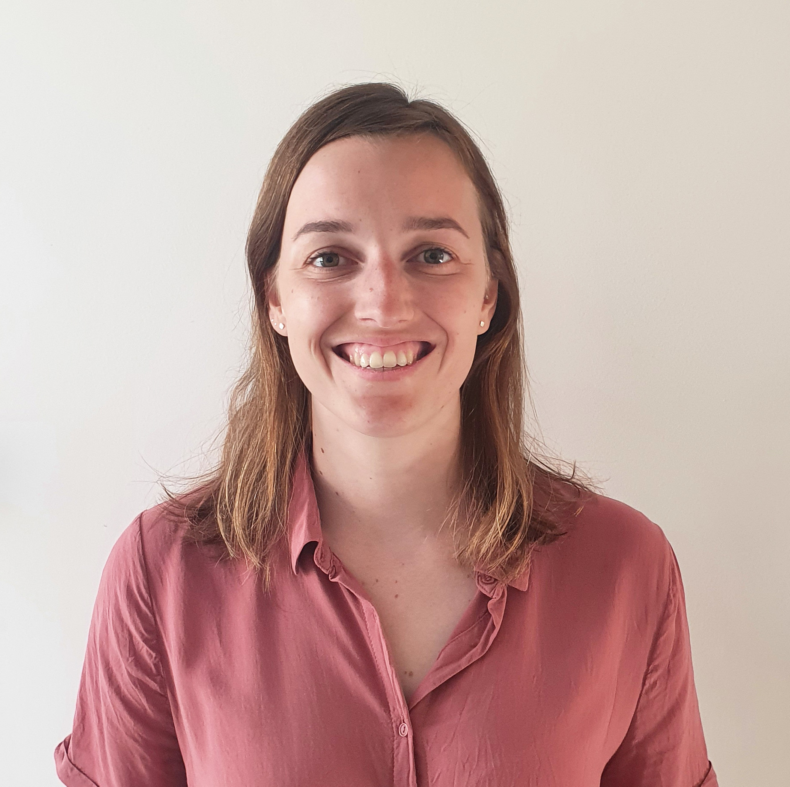

You never have to unscrew someone else's lightbulb in order to shine. 💡
| Birthday | 09/03/1992 |
| Favorite color | Green |
| Favorite food | Vegan food with eastern flavours |
| Pineapple on pizza |
|
... you need someone to listen, a good laugh or a good cry.
... you want some fun team activities or some insight about Ghent.
... you want some help with the assignments. Maybe we can figure it out together.
On the 9th of march 2016, there was a total solar eclips. You could see this total solar eclipse in some parts of the world. The best place to see this nature phenomenon was in Indonesia. Me and my boyfriend were lucky, because at that time, our world trip guided us to Flores, Indonesia. On top of that, it was my birthday and we were near a beautiful Volcano. So we decided to look for some local guides to bring us to the top of the volcano before the solar eclipse so we could experience it from there. The next morning, at 4am, we took our scooters and followed our guides to the beginning of the vulcano. You should know that Flores does not have any street lights or roads like we know them here in Belgium. At some point during the trip, when we were driving downhill, there was a rock on the road. I didn't see it beacause it was dark so I drove over it. The next thing, my wheel slipped out from under me and I was 'driving' towards a ditch. There was a small wooden plank on top of the ditch and I managed to get the scooter on that plank. After some time on that plank, I had the scooter under control and decided to send it back on the road. Unfortunatly, the ditch was very swompy and my front wheel got stuck. The next thing I know, I was launched and flew over my scooter untill I fell head first on the road. I immediatly realised that my arm was less attached to my body than before so we wanted to go to the hospital. The only problem, there was no fully equiped hospital in the area, only a house with some medicin, an old xray and some local nurses. They helped me as good as they could, then I was repatriated to an Australian hospital in Bali. My clavicle was broken in three places and I underwent surgery. After 4 days of puking (bad reaction on the painkillers), I left the hospital. 2 days later, we had to leave the country because our visum expired. The surgery went very well and we continued our travels. We never saw the total solar eclipse or the top of the vulcano and I had a weird 24th birthday. But what I remember the most of this story, is that my helmet saved my life and that my boyfriend is my rock during difficult times.
I broke my clavicle in Indonesia instead of watching a total solar eclipse on top of a volcano 🌋.
<< previous || Lisa Baetsle || next >>